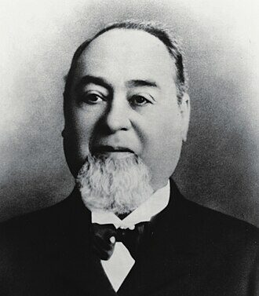

A Bavarian immigrant who sold cloth out of a San Francisco storefront put his name on a pair of work trousers reinforced with copper rivets. More than a century and a half later, that name is stitched onto the most American garment in the world.

Levi Strauss was born Löb Strauß in Bavaria in 1829 and came to the United States as a teenager in 1847. He built a dry-goods business in gold-rush San Francisco, and in 1873 he and the tailor Jacob Davis patented the riveted work trouser — the blue jean. An immigrant's name became a word spoken in every country on earth.
The document behind this story
United States Patent No. 139,121 — 'Improvement in Fastening Pocket-Openings' — Jacob W. Davis, assignor to himself and Levi Strauss & Company, 1873-05-20.
This is the document that turned a tailor's workaround into a global garment. United States Patent No. 139,121 was granted on 20 May 1873, on an application filed the previous August, to "Jacob W. Davis, of Reno, Nevada, assignor to himself and Levi Strauss & Company, of San Francisco, California." It is a United States government document and therefore in the public domain; we quote the opening of its specification directly from the patent text.
My invention relates to a fastening for pocket-openings, whereby the sewed seams are prevented from ripping.
Levi Strauss was born Löb Strauß on 26 February 1829 in Buttenheim, a village in the Kingdom of Bavaria, into a Jewish family. His father worked as a peddler and died while Löb was still young. In 1847, with his mother and sisters, he emigrated to the United States, sailing from Bremerhaven.
In New York he joined the dry-goods business run by his older brothers and learned the trade of importing and selling cloth and household goods. He became a United States citizen in 1853 and, like tens of thousands of others, turned his eyes west toward the California gold rush.
Strauss settled in San Francisco to run the West Coast arm of the family firm — Levi Strauss & Co. — supplying the miners, shopkeepers and households of a city booming almost overnight. He did not dig for gold; he sold to the people who did, and to everyone who came to feed and clothe them. It was steady, unglamorous work, and it made him one of the city's established merchants.
The exact year of his arrival in San Francisco is given slightly differently by different sources — most say 1853, some 1854 — and we note the small discrepancy rather than smooth it over. What is not in doubt is that by the 1860s his firm was a fixture of San Francisco commerce.
In the early 1870s a tailor in Reno, Nevada, named Jacob Davis, one of Strauss's cloth customers, worked out a way to keep work trousers from tearing at the pocket corners and fly: he fastened the stress points with copper rivets. The idea worked, and his customers wanted more, but Davis could not afford the seventy-dollar fee to patent it. He wrote to Levi Strauss & Co., the firm that supplied his cloth, and proposed they take out the patent together.
Strauss agreed to finance it. On 20 May 1873 the United States granted Patent No. 139,121 to Jacob Davis, "assignor to himself and Levi Strauss & Company." The riveted "waist overall" — later simply the jean — was born, and Levi Strauss & Co. began manufacturing it.
The riveted trouser made Strauss's firm far more than a regional supplier. The garment was durable, cheap and practical, and it spread from miners and labourers to farmers, cowboys and, eventually, to nearly everyone, everywhere. Strauss himself remained a San Francisco merchant and citizen to the end, known in the city as much for his giving as his business.
He was a founding member of the San Francisco Chamber of Commerce and, from 1877, its treasurer. He endowed scholarships at the University of California and supported orphanages and Jewish charities in the city. He never married, and when he died he left his business to his nephews and much of his fortune to charity.
A couple of points deserve care. The blue jean was a joint invention: the rivet idea was Jacob Davis's, and the patent names Davis first, as the inventor, "assignor to himself and Levi Strauss & Company" — Strauss was the partner who financed and manufactured it, not the lone genius of popular legend. And Strauss's exact year of arrival in San Francisco is not perfectly settled in the sources. He was born in Bavaria on 26 February 1829 and died in San Francisco on 26 September 1902; he is buried in Colma, California.
Every fact on this page comes from one of these 5 items. Each links to the institution that holds it and gives that institution’s own rights wording.
The anchor: the Bavarian Jewish immigrant whose name became the most American of garments.
Rights, in the institution’s words: Commons record labels this image: Public domain (in the United States).
patent
The spotlight document: the 1873 patent that created the riveted blue jean. Titled 'Improvement in Fastening Pocket-Openings', granted 20 May 1873 on an application filed 9 August 1872, to 'Jacob W. Davis, of Reno, Nevada, assignor to himself and Levi Strauss & Company, of San Francisco, California.' Its specification opens: 'My invention relates to a fastening for pocket-openings, whereby the sewed seams are prevented from ripping.'
Rights, in the institution’s words: Public-domain United States government document.
reference entry
Source: born Löb Strauß on 26 February 1829 in Buttenheim, in the Kingdom of Bavaria; emigrated to the United States in 1847; the riveted-trousers patent is U.S. Patent 139,121 (1873); died 26 September 1902 in San Francisco.
Rights, in the institution’s words: (not checked; cited only)
biography
Source for immigration and philanthropy: original name Löb; born 26 February 1829 in Buttenheim; emigrated with his mother and sisters via Bremerhaven in 1847 after his father's death; joined his brothers' New York textiles business and became a United States citizen in 1853; went to San Francisco during the gold rush; a founding member and from 1877 treasurer of the San Francisco Chamber of Commerce; endowed scholarships at the University of California and supported Jewish charities; died 26 September 1902.
Rights, in the institution’s words: (not checked; cited only)
reference entry
Corroborating source for the business and the partnership with Jacob Davis that produced the 1873 riveted-jeans patent.
Rights, in the institution’s words: (not checked; cited only)